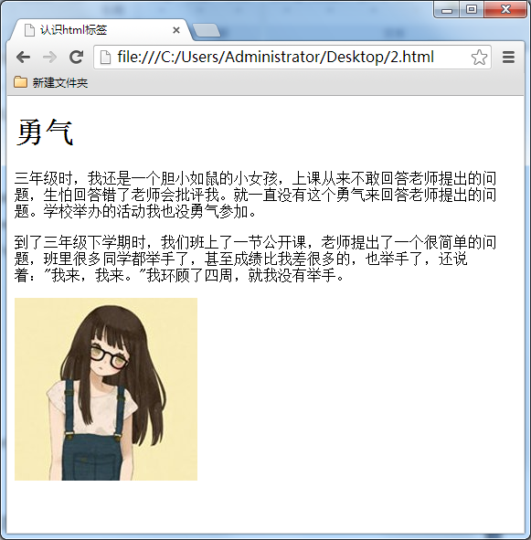

test1--第一个网页 欢迎来到HTML+CSS课堂，加入高端大气上档次的web前端开发团队。我们在正式学习之前，先来热热身，问候下世界，做个人生中的第一个html网页吧。 |
<!DOCTYPE HTML> <html> <head> <meta http-equiv="Content-Type" content="text/html; charset=utf-8"> <title>制作我的第一个网页</title> </head> <body> <h1>Hello World</h1> </body> </html> |
test2--html与css与JavaScript 学习web前端开发基础技术需要掌握：HTML、CSS、JavaScript语言。下面我们就来了解下这三门技术都是用来实现什么的： 1. HTML是网页内容的载体。内容就是网页制作者放在页面上想要让用户浏览的信息，可以包含文字、图片、视频等。 2. CSS样式是表现。就像网页的外衣。比如，标题字体、颜色变化，或为标题加入背景图片、边框等。所有这些用来改变内容外观的东西称之为表现。 3. JavaScript是用来实现网页上的特效效果。如：鼠标滑过弹出下拉菜单。或鼠标滑过表格的背景颜色改变。还有焦点新闻（新闻图片）的轮换。可以这么理解，有动画的，有交互的一般都是用JavaScript来实现的。 |
test3--标题，段落，图片 让我们通过一个网页的学习，来对html标签有一个初步理解。平常大家说的上网就是浏览各种各式各样的网页，这些网页都是由html标签组成的。下面就是一个简单的网页。效果图如下：  我们来分析一下，这个网页由哪些html标签组成： “勇气”是网页内容文章的标题，<h1></h1>就是标题标签，它在网页上的代码写成<h1>勇气</h1>。 “三年级时...我也没勇气参加。” 是网页中文章的段落，<p></p>是段落标签。它在网页上的代码写成 <p>三年级时...我也没勇气参加。</p> 网页上那张小女生的图片，由img标签来完成的，它在网页上的代码写成<img src="1.jpg"> 网页的完整代码如下图： 
总结一下，可以这么说，网页中每一个内容在浏览器中的显示，都要存放到各种标签中。 |
test4--标签的语法 标签的语法1. 标签由英文尖括号<和>括起来，如<html>就是一个标签。 2. html中的标签一般都是成对出现的，分开始标签和结束标签。结束标签比开始标签多了一个/。 如： （1） <p></p> （2） <div></div> （3） <span></span> 
3. 标签与标签之间是可以嵌套的，但先后顺序必须保持一致，如：<div>里嵌套<p>，那么</p>必须放在</div>的前面。如下图所示。 
4. HTML标签不区分大小写，<h1>和<H1>是一样的，但建议小写，因为大部分程序员都以小写为准。
认识html文件基本结构这一节中我们来学习html文件的结构：一个HTML文件是有自己固定的结构的。
<html>
<head>...</head>
<body>...</body>
</html>
代码讲解： 1. <html></html>称为根标签，所有的网页标签都在<html></html>中。 2. <head> 标签用于定义文档的头部，它是所有头部元素的容器。头部元素有<title>、<script>、 <style>、<link>、 <meta>等标签，头部标签在下一小节中会有详细介绍。 3. 在<body>和</body>标签之间的内容是网页的主要内容，如<h1>、<p>、<a>、<img>等网页内容标签，在这里的标签中的内容会在浏览器中显示出来。 |
test4--文本结构 认识html文件基本结构这一节中我们来学习html文件的结构：一个HTML文件是有自己固定的结构的。
<html>
<head>...</head>
<body>...</body>
</html>
代码讲解： 1. <html></html>称为根标签，所有的网页标签都在<html></html>中。 2. <head> 标签用于定义文档的头部，它是所有头部元素的容器。头部元素有<title>、<script>、 <style>、<link>、 <meta>等标签，头部标签在下一小节中会有详细介绍。 3. 在<body>和</body>标签之间的内容是网页的主要内容，如<h1>、<p>、<a>、<img>等网页内容标签，在这里的标签中的内容会在浏览器中显示出来。 |
test5--<head>标签 认识head标签做得好，下面我们来了解一下<head>标签的作用。文档的头部描述了文档的各种属性和信息，包括文档的标题等。绝大多数文档头部包含的数据都不会真正作为内容显示给读者。 下面这些标签可用在 head 部分：
<head>
<title>...</title>
<meta>
<link>
<style>...</style>
<script>...</script>
</head>
<title>标签：在<title>和</title>标签之间的文字内容是网页的标题信息，它会出现在浏览器的标题栏中。网页的title标签用于告诉用户和搜索引擎这个网页的主要内容是什么，搜索引擎可以通过网页标题，迅速的判断出网页的主题。每个网页的内容都是不同的，每个网页都应该有一个独一无二的title。
例如：
<head>
<title>hello world</title>
</head>
<title>标签的内容“hello world”会在浏览器中的标题栏上显示出来，如下图所示：

<head>标签中的其它标签内容的讲解，会在以后的章节中为大家一一讲解。
|
test6--注释 了解HTML的代码注释什么是代码注释？代码注释的作用是帮助程序员标注代码的用途，过一段时间后再看你所编写的代码，就能很快想起这段代码的用途。代码注释不仅方便程序员自己回忆起以前代码的用途，还可以帮助其他程序员很快的读懂你的程序的功能，方便多人合作开发网页代码。 语法： <!--注释文字 -->
如：右边编辑器的代码的第 8、12 行都是，但是你会发现注释代码是不会在结果窗口中显示出来的。 |
test7--<body>标签 <body>标签，网页上显示的内容放在这里 还记得body标签吗，在上一章节我们简单介绍过：在网页上要展示出来的页面内容一定要放在body标签中。如下图是一个新闻文章的网页。 
在浏览器中的显示效果： |
test8 <blockquote>标签，长文本引用 <blockquote>的作用也是引用别人的文本。但它是对长文本的引用，如在文章中引入大段某知名作家的文字，这时需要这个标签。 等等，上一节<q>标签不是也是对文本的引用吗？不要忘记<q>标签是对简短文本的引用，比如说引用一句话就用到<q>标签。 如想在我的文章中引用李白《关山月》中的诗句，因为引用文本比较长，所以使用<blockquote>。 语法: <blockquote>引用文本</blockquote>
如下面例子： <blockquote>明月出天山，苍茫云海间。长风几万里，吹度玉门关。汉下白登道，胡窥青海湾。由来征战地，不见有人还。 戍客望边色，思归多苦颜。高楼当此夜，叹息未应闲。</blockquote> 浏览器对<blockquote>标签的解析是缩进样式。如下图所示： |
test9 使用<br>标签分行显示文本对于上一小节的例子，我们想让那首诗显示得更美观些，如显示下面效果： 
怎么可以让每一句诗词后面加入一个折行呢？那就可以用到<br />标签了，在需要加回车换行的地方加入<br />，<br />标签作用相当于word文档中的回车。 上节的代码改为： 
语法： xhtml1.0写法： <br />
html4.01写法： <br>
大家注意，现在一般使用 xhtml1.0 的版本的写法（其它标签也是），这种版本比较规范。 与以前我们学过的标签不一样，<br />标签是一个空标签，没有HTML内容的标签就是空标签，空标签只需要写一个开始标签，这样的标签有<br />、<hr />和<img />。 讲到这里，你是不是有个疑问，想折行还不好说嘛，就像在 word 文件档或记事本中，在想要折行的前面输入回车不就行了吗？很遗憾，在 html 中是忽略回车和空格的，你输入的再多回车和空格也是显示不出来的。如下边的代码。 
上面的代码在浏览中显示是没有回车效果的。如下图所示： 
总结：在 html 代码中输入回车、空格都是没有作用的。在html文本中想输入回车换行，就必须输入<br />。 |
test10 为你的网页中添加一些空格在上一节的例子，我们已经讲解过在html代码中输入空格、回车都是没有作用的。要想输入空格，必须写入 。 语法：
在html代码中输入空格是不起作用的，如下代码。 
在浏览中显示，还是没有空格效果。 
输入空格的正确方法： 
在浏览器中的显示出来的空格效果。如下图所示。 |
test11 认识<hr>标签，添加水平横线在信息展示时，有时会需要加一些用于分隔的横线，这样会使文章看起来整齐些。如下图所示： 
语法： html4.01版本 <hr> xhtml1.0版本 <hr /> 注意： 1. <hr />标签和<br />标签一样也是一个空标签，所以只有一个开始标签，没有结束标签。 2. <hr />标签的在浏览器中的默认样式线条比较粗，颜色为灰色，可能有些人觉得这种样式不美观，没有关系，这些外在样式在我们以后学习了css样式表之后，都可以对其修改。 |
test12 <address>标签，为网页加入地址信息一般网页中会有一些网站的联系地址信息需要在网页中展示出来，这些联系地址信息如公司的地址就可以<address>标签。也可以定义一个地址（比如电子邮件地址）、签名或者文档的作者身份。 语法： <address>联系地址信息</address>
如： <address>文档编写：lilian 北京市西城区德外大街10号</address>
<address>
本文的作者：<a href="mailto:lilian@imooc.com">lilian</a>
</address>
在浏览器上显示的样式为斜体，如果不喜欢斜体，当然可以，可以在后面的课程中使用 css 样式来修改它<address>标签的默认样式。 |
test13 想加入一行代码吗？使用<code>标签在介绍语言技术的网站中，避免不了在网页中显示一些计算机专业的编程代码，当代码为一行代码时，你就可以使用<code>标签了，如下面例子： <code>var i=i+300;</code>
注意：在文章中一般如果要插入多行代码时不能使用<code>标签了。 语法： <code>代码语言</code>
|
test14 使用<pre>标签为你的网页加入大段代码在上节中介绍加入一行代码的标签为<code>，但是在大多数情况下是需要加入大段代码的，如下图： 
怎么办？不会是每一代码都加入一个<code>标签吧，没有这么复杂，这时候就可以使用<pre>标签。 语法： <pre>语言代码段</pre>
<pre> 标签的主要作用:预格式化的文本。被包围在 pre 元素中的文本通常会保留空格和换行符。 如下代码：
<pre>
var message="欢迎";
for(var i=1;i<=10;i++)
{
alert(message);
}
</pre>
在浏览器中的显示结果为： 
在上面的例子中可以看到代码中的空格，换行符都保留下来。如果用以前的方法，回车需要输入<br>签，空格需要输入 注意：<pre> 标签不只是为显示计算机的源代码时用的，在你需要在网页中预显示格式时都可以使用它，只是<pre>标签的一个常见应用就是用来展示计算机的源代码。 |


{kind=link}